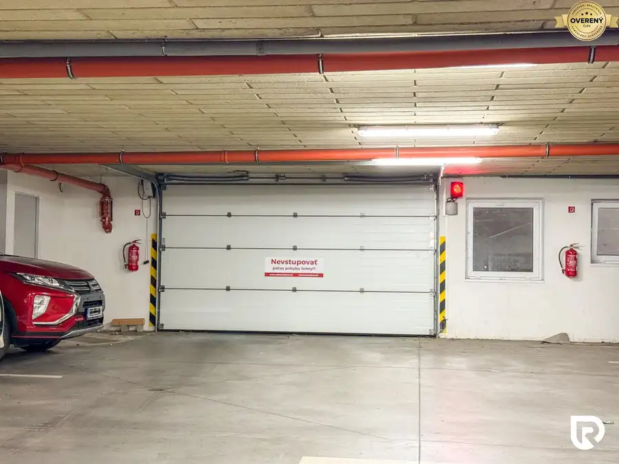
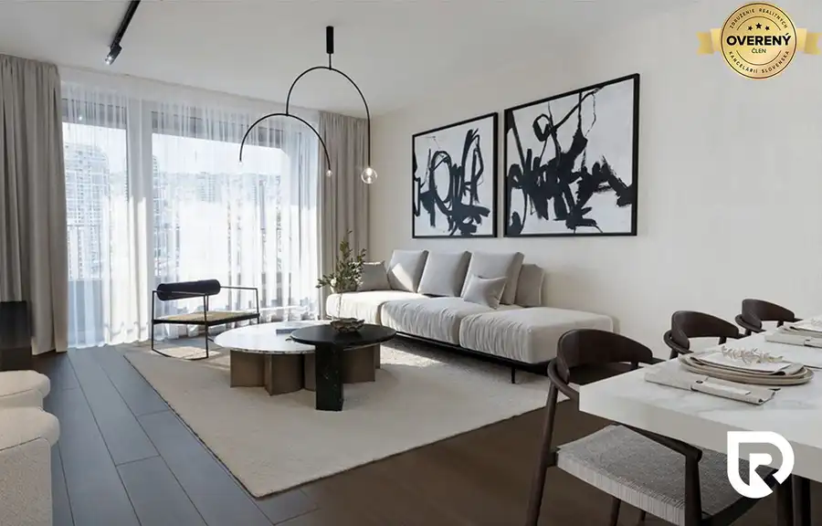
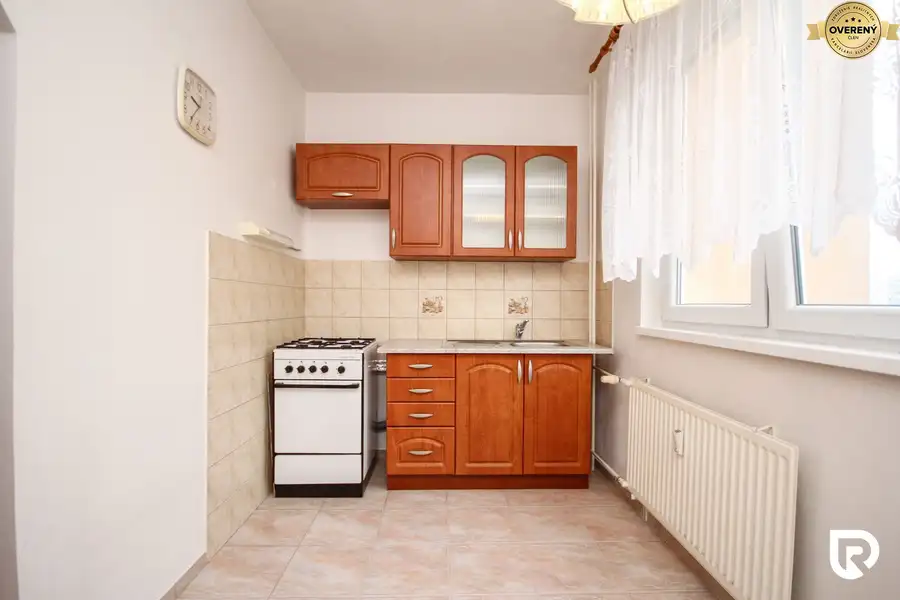

Rodinný dom s pozemkom 650m2, Adamovské Kochanovce
Adamovské Kochanovce
- Dispozícia3-izbový
- Plocha125 m²
- Poschodie0. z 1
- Stavpôvodný
- Vlastníctvoosobné
- Energetická triedaB
O nehnuteľnosti
RADO Reality Vám ponúka na predaj štýlový 3-izbový rodinný dom akých je v dnešnej dobe ako šafranu. Zastavaná plocha domu je 177m2, úžitková plocha je približne 125m2 a rozloha pozemku ideálnych 650m2. Jedná sa o tehlový rodinný dom, kolaudovaný v roku 2015. Dom je vhodný na nasťahovanie bez nutnosti veľkých investícií. Súčasťou domu je aj garáž pre jedno auto. Za domom je postavený ešte záhradný domček na náradie a fínska sauna.
Dom je pripojený na elektrinu, plyn, obecný vodovod aj kanalizáciu. O podlahové kúrenie aj ohrev vody sa stará plynový kotol BAXI.
Dispozične dom pozostáva zo vstupnej chodby, 2 samostatných izieb, veľkej obývačky s kuchyňou a špajzou a kúpeľne. V obývačke sa nachádza aj murovaný krb na tuhé palivo a východ na priestrannú terasu a na pozemok s jazierkom. V kúpeľni sa nachádza vaňa, sprchovací kút, WC a bidet. Z pozemku je ešte vstup do garáže a do malej miestnosti, ktorú je možné využívať ako bicykláreň, sklad alebo dielňu.
V obci Adamovské Kochanovce sa nachádzú potraviny, pohostinstvo, Domov sociálnych služieb, futbalové ihrisko, katolícky aj evanielický kostol a autobusová zastávka. Vo vedľajších obciach Chocholná-Velčice a Melčice-Lieskové sa nachádza škôlka, základná škola, reštaurácie a pohostinstvá, prírodné minerálne pramene a mnoho iného.
Rodinný dom má energetický certifikát kategórie B.
3D prehliadka: https://my.matterport.com/show/?m=FKUrXRgFM85
Viac fotografií nájdete na stránke radoreality.sk
Cena domu je 339.000,-€
Patrik Pavlík, RSc.
RADO Reality Group
Tel:
E-mail:
Uvedená cena je konečná, pokiaľ sa zmluvné strany nedohodnú inak a nenavyšuje sa o odmenu sprostredkovateľa, v cene je zahrnuté právne poradenstvo, vyhotovenie kúpnych zmlúv, hypotekárne poradenstvo a uhradenie správneho poplatku za návrh na vklad do katastra nehnuteľností.
RADO Reality Group je ocenená Realitnou úniou ako najlepšia realitná kancelária na Slovensku za rok 2022 a 2023. Okrem iného sme držiteľmi ďalších 6 prestížnych ocenení.
Parametre
| Rozloha pozemku | 650 m² |
|---|---|
| Zastavaná plocha | 177 m² |
| Celková rozloha | 125 m² |
| Úžitková plocha | 125 m² |
| Poschodie | prízemie |
| Počet poschodí | 1 |
| Počet izieb | 3 |
| Vlastníctvo | osobné |
| Stav | pôvodný |
| Odvoz odpadu | áno |
| Voda | verejný vodovod |
| El. napätie | 230/400V |
| Plyn | áno |
| Kanalizácia | áno |
| Internet | optika |
| Kúpeľňa | vaňa a sprchovací kút |
| Vykurovanie | vlastné - plyn |
| Terasa | áno - 1 |
| Pivnica | nie |
| Garáž | áno - 1 auto |
| Parkovanie | vlastné vyhradené |
| Inžinierske siete | áno |
| Postavené z | tehla |
| Zariadenie | nezariadený |
| Zateplený objekt | áno |
| Strecha | pôvodná |
| Krb | áno |
| Energetický certifikát | B |
| Bezbariérový prístup | nie |
| Okná | plastové |
| Terén | rovina |
| Prístupová cesta | asfaltová cesta |
| Dátum zverejnenia | 3. 9. 2026 |
Kde to je
Mohlo by Vás zaujímať

Ostatné5 22 000 €Vnútorné parkovacie miesto RUBIKON, Legionárska, Trenčín Trenčín 12 m² RADO Reality Vám ponúka na predaj vnútorné parkovacie miesto v podzemnej garáži, v bytovom dome RUBIKON, na ul. Legionárska v Trenčíne. Vstup do…
Byt10 334 900 €2i byt 50m2, DOWNTOWN YARDS - Košická ul. - Bratislava Staré Mesto, Bratislava 2-izbový50 m²2. podlažie RADO Reality Vám ponúka na predaj 2-izbový byt v mestskej časti Ružinov, v prémiovom projekte DownTown Yards, situovanom v širšom centre Bratislavy.…
Byt10 117 995 €2i byt 49m2 + lódžia, Halalovka - Trenčín Trenčín 2-izbový49 m²4. podlažie RADO Reality Vám ponúka na predaj 2-izbový byt s rozlohou 49m2 na ulici Halalovka v Trenčíne. Byt je situovaný na 4. poschodí v 7-poschodovom…